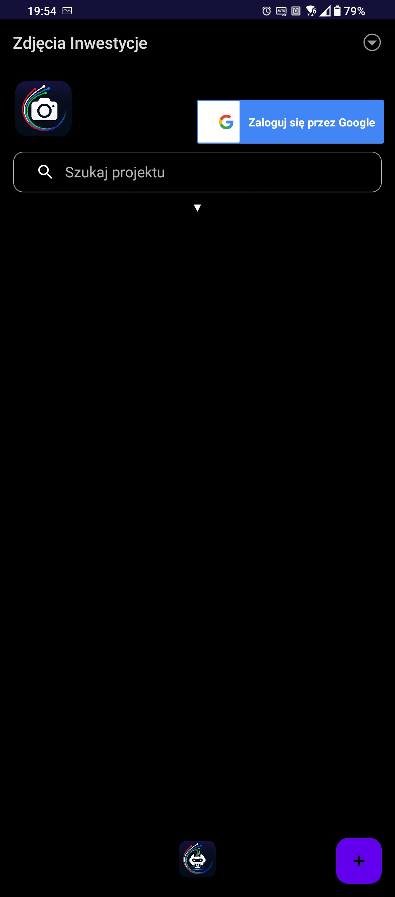
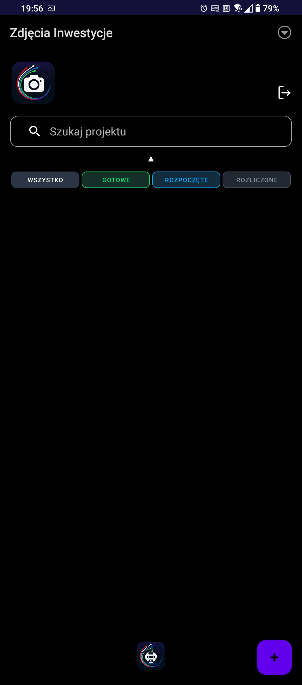
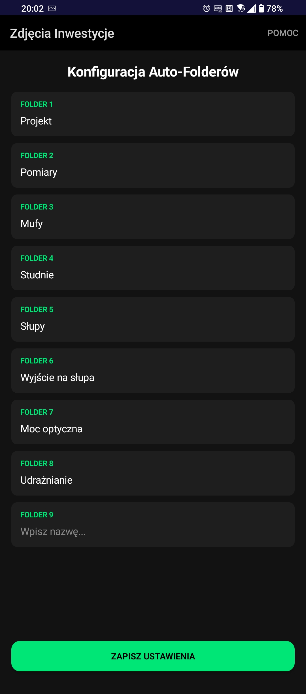
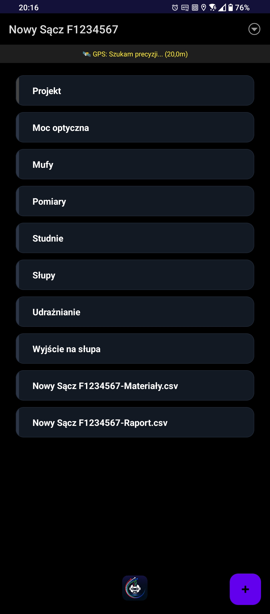
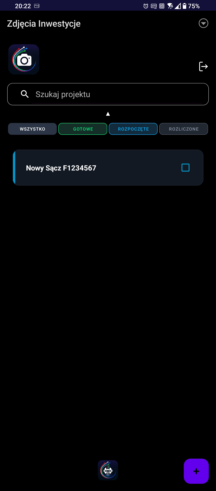
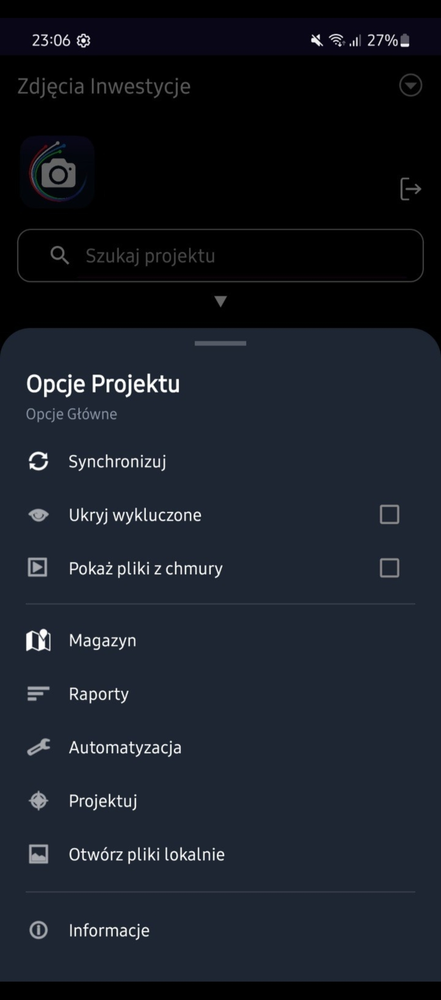
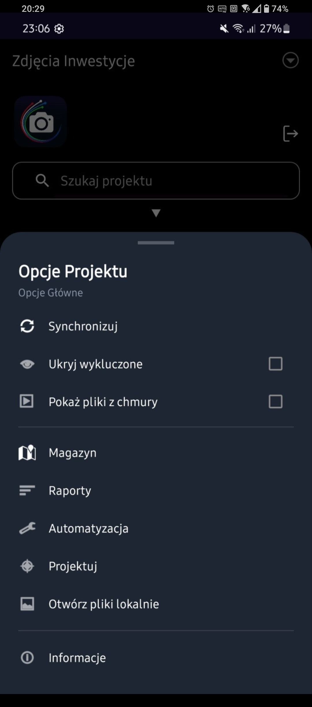

Instrukcja Obsługi
Zdjęcia Inwestycje - Branża Telekomunikacyjna
1. Wprowadzenie
Zdjęcia Inwestycje to specjalistyczne narzędzie zaprojektowane dla ekip branży telekomunikacyjnej. System eliminuje chaos w galerii telefonu, automatyzuje opisywanie zdjęć i integruje dokumentację fotograficzną z ewidencją materiałową oraz projektową.
KROK 1: Aktywacja Licencji 🔐
Zaraz po zainstalowaniu i pierwszym uruchomieniu aplikacji Zdjęcia Inwestycje, zobaczysz ekran blokady. Licencja jest generowana indywidualnie dla Twojego telefonu.
Instrukcja aktywacji:
- Kopiowanie ID: Kliknij palcem w tekst "Twoje ID: [numer_identyfikacyjny]". Aplikacja automatycznie skopiuje ten unikalny kod do schowka Twojego telefonu.
- Wysłanie zgłoszenia: Wyślij skopiowane ID na adres e-mail: mpktechdev@gmail.com.
- Odbiór klucza: W odpowiedzi otrzymasz klucz dostępu.
- Wklejenie kodu: Skopiuj całą treść i wklej ją w czarne pole o nazwie "Wklej tutaj Licencje".
- Finalizacja: Kliknij zielony przycisk AKTYWUJ LICENCJĘ.

Kliknij strzałki, aby zobaczyć więcej
KROK 2: Logowanie i Synchronizacja Grupowa 🌐
Po aktywacji licencji musisz połączyć aplikację z Dyskiem Google. To tutaj będą bezpiecznie przechowywane wszystkie zdjęcia i raporty.
Jak się zalogować?
- Inicjacja: Na ekranie głównym kliknij niebieski przycisk "Zaloguj się przez Google".
- Wybór konta: Wybierz konto e-mail, na którym chcesz gromadzić dokumentację.
- Potwierdzenie: Na dole ekranu pojawi się czarny pasek: "Zalogowano jako: [Twoja Nazwa]".
Multi-Synchronizacja (Praca w Zespole)
- Jeden Dysk, Wiele Telefonów: Zalogujcie całą ekipę na to samo konto Google.
- Automatyczne Łączenie: Jeśli każdy stworzy projekt o tej samej nazwie (np. Inwestycja_Krakow_01), system inteligentnie "sklei" zdjęcia wszystkich monterów do jednego folderu na Dysku.

Kliknij strzałki, aby zobaczyć więcej
KROK 3: Zarządzanie Projektami i Statusami 📂
W tym miejscu tworzysz nowe zadania i kontrolujesz postępy prac całej ekipy.
Jak dodać nową inwestycję?
- Nowy projekt: Kliknij fioletowy przycisk z plusem (+) w prawym dolnym rogu ekranu.
- Nazewnictwo: W oknie, które się pojawi, wpisz nazwę inwestycji (np. Nowy Sącz F12345678). Staraj się używać unikalnych numerów projektów, aby ułatwić późniejsze wyszukiwanie.
- Zatwierdzenie: Kliknij DODAJ. Aplikacja automatycznie przygotuje strukturę folderów dla tego projektu.
Inteligentne Filtrowanie i Kolory (Statusy)
Abyś nie pogubił się w gąszczu zleceń, system oferuje optyczną segregację projektów:
- 🟣 WSZYSTKO: Widok zbiorczy wszystkich Twoich projektów.
- 🟢 GOTOWE: Projekty ze skończoną dokumentacją, czekające na oddanie.
- 🔵 ROZPOCZĘTE: Aktywne budowy, nad którymi aktualnie pracujesz.
- ⚪ ROZLICZONE: Archiwalne projekty, które zostały już zamknięte finansowo.
Szybkie Wyszukiwanie i Edycja
- 🔍 Wyszukiwarka: Na górze ekranu znajduje się pasek wyszukiwania. Wpisz fragment nazwy lub numeru projektu, aby błyskawicznie go odnaleźć (działa zarówno dla projektów lokalnych, jak i tych w chmurze).
- ✏️ Edycja i Usuwanie: Przytrzymaj dłużej palec na danym projekcie, aby zmienić jego nazwę, przypisać mu nowy kolor statusu lub całkowicie go usunąć.

Kliknij strzałki, aby zobaczyć więcej
KROK 4: Struktura Projektu i Automatyzacja Folderów ⚙️
System Zdjęcia Inwestycje sam przygotuje Twoje miejsce pracy. Możesz zdefiniować do 9 automatycznych folderów, które pojawią się w każdym nowym projekcie.
Jak ustawić automatyzację?
- Menu Ustawień: Kliknij ikonę trzech kresek (☰) w prawym górnym rogu ekranu głównego, kliknij opcje "Automatyzacja".
- Konfiguracja: Zdefiniuj nazwy folderów, których najczęściej używasz (np. Studnie, Słupy, Wykopy). Zapisz konfigurację.
- Efekt: Od teraz każdy nowo dodany projekt będzie miał już gotowy ten sam układ katalogów.
Specjalne Foldery Systemowe
- Folder "Projekt" (Szary): Zawsze podświetlony na szaro, abyś w pełnym słońcu od razu wiedział, gdzie są mapy. Służy wyłącznie do przechowywania dokumentacji w formacie PDF.
- 📏 Folder "Pomiary": Przeznaczony na pliki dokumentujące sieć: PDF oraz .sor (reflektometryczne).
Ważna uwaga: Aby poprawnie dodać pliki, nie używaj "szybkiego wyboru" Androida. Wybierz pełną ścieżkę dostępu (np. Dysk wewnętrzny > Download > Twoje_Pomiary). - 💠 Folder "Mufy": Zaawansowany moduł zarządzania złączami. Kliknij turkusowy plus (+) w prawym dolnym rogu. Wybierz typ złącza: OPP, OSD lub ZS. Wpisz tylko numer (np. 0001). System sam stworzy pełną nazwę (np. OPP0001).
- 💡 Folder "Słupy / Studnie": Po wejściu w folder kliknij menu (☰) i wybierz "Wklej listę numerów". Wklej numery kabli po przecinku (np. OKH0062140, OKW0866485). Po zapisaniu, w menu "Wybierz numer" będziesz mógł aktywować dany numer kabla. Aplikacja automatycznie dopisze go do nazwy zdjęcia (np. OKH0062140_20260304_134034). Jeśli wybierzesz "Standard (IMG)", nazwy będą standardowe.
- ⚡ Folder "Moc optyczna": W menu kliknij "Wybierz Mufę" (lista jest pobierana automatycznie z folderu "Mufy"). Po wybraniu mufy (np. OSD0087), aplikacja automatycznie podstawi ją do nazwy zdjęcia (np. OSD0087_20260304_134034). Wybierz "Standard (IMG)", aby wrócić do nazw domyślnych.
Praca z aparatem i Geotagowanie 📍
Po wejściu w dowolny folder (stworzony automatycznie lub ręcznie) możesz zacząć dokumentację fotograficzną:
- Precyzyjny GPS: W każdym folderze, na górnym pasku, znajdziesz wskaźnik lokalizacji. Aplikacja na bieżąco aktualizuje współrzędne.
- Wymagania: Upewnij się, że w aparacie systemowym masz włączoną funkcję Geotagowania. Dzięki temu każde zdjęcie wykonane aplikacją będzie miało w metadanych idealnie przypisaną lokalizację GPS.

Kliknij strzałki, aby zobaczyć więcej
KROK 5: Magazyn, Raporty i Eksport CSV 📊
System pozwala na precyzyjne śledzenie zużycia materiałów oraz generowanie raportów powykonawczych dla każdej mufy i całego projektu.
1. Magazyn (Ewidencja Materiałowa) 🛠️
Możesz zarządzać materiałami na dwa sposoby:
- Z poziomu Projektu: Zarządzasz materiałami tylko dla tej konkretnej budowy.
- Z Ekranu Głównego: Widzisz zbiorczą listę wszystkich projektów i stanów magazynowych.
Szybkie dodawanie (Bulk Import):
Nie musisz wpisywać każdego elementu osobno. Skopiuj listę materiałów z Excela lub pliku tekstowego i wklej ją do aplikacji. Pamiętaj: jeden materiał = jedna linijka. Aplikacja automatycznie stworzy osobne karty dla każdego przedmiotu.
Edycja materiału:
W edytorze możesz określić: Nazwę i jednostkę (m / szt), ilość pobraną (z magazynu głównego), ilość zużytą (wbudowaną w teren). Po zakończeniu kliknij ZAPISZ.
2. Raporty i Dokumentacja Muf 📝
Sekcja raportów inteligentnie dostosowuje się do Twojej pracy:
- Automatyczne listy: Jeśli w folderze „Mufy” stworzyłeś np. 10 złączy, sekcja raportów automatycznie wygeneruje 10 pól do opisu – dla każdego złącza z osobna.
- Główny opis: Na górze znajduje się pole na raport ogólny z całego dnia lub etapu prac.
- Inteligentne generowanie: Jeśli nie uzupełnisz opisu danej mufy, system pominie ją w raporcie, aby nie tworzyć pustych miejsc.
3. Eksport danych i Udostępnianie 📤
Wszystkie dane (magazyn i raporty) możesz wyeksportować do formatu .csv, który jest w pełni kompatybilny z programem Excel.
- Eksport lokalny: Kliknij ikonę eksportu w lewym dolnym rogu. Plik CSV pojawi się na końcu listy folderów w Twoim projekcie.
- Udostępnianie: Przytrzymaj dłużej palec na wygenerowanym pliku CSV, aby wysłać go e-mailem, na WhatsApp lub Dysk Google.
- Raport Zbiorczy: Wchodząc w raporty z menu głównego, możesz wyeksportować zestawienie zbiorcze wszystkich inwestycji ze strukturą: Nazwa | Opis | Cena, co ułatwia finalne rozliczenie z biurem.

Kliknij strzałki, aby zobaczyć więcej
KROK 6: Praca w Chmurze i Współdzielenie Projektów ☁️
Aplikacja nie tylko wysyła zdjęcia, ale też potrafi "czytać" zawartość Twojego Dysku Google. Dzięki temu cała ekipa ma dostęp do tych samych danych w czasie rzeczywistym.
1. Podgląd Plików z Chmury
Jeśli masz dostęp do internetu, możesz zobaczyć projekty, których nie masz fizycznie w pamięci telefonu:
- Aktywacja: W menu głównym zaznacz opcję "Pokaż pliki z chmury".
- Efekt: Na liście pojawią się wszystkie projekty zsynchronizowane na Twoim Dysku Google.
- Szybki wgląd: Kliknięcie w taki projekt przeniesie Cię bezpośrednio do aplikacji Dysk Google, prosto do folderu z dokumentacją.
2. Udostępnianie Linków (Dla Biura i Odbiorów)
Nie musisz już wysyłać setek zdjęć mailem. Możesz wysłać jeden link do całego folderu:
- Opcje: Przytrzymaj dłużej palec na projekcie online.
- Udostępnij link: Aplikacja wygeneruje bezpośredni link do Dysku Google, który możesz od razu wysłać na WhatsApp, e-mail lub do biura projektowego.
- Kopiowanie nazwy: Możesz też szybko skopiować dokładną nazwę projektu do schowka.
3. Funkcja "UTWÓRZ LOKALNIE" – Klucz do pracy zespołowej 🤝
To najważniejsza funkcja dla grup monterskich:
- Scenariusz: Monter A tworzy projekt "Kraków_001", robi zdjęcia i klika synchronizację.
- Wyszukiwanie: Monter B włącza "Pokaż pliki z chmury" (może użyć wyszukiwarki, która przeszukuje też pliki online).
- Pobieranie struktury: Monter B wybiera opcję "Utwórz lokalnie".
- Efekt: Aplikacja na telefonie Montera B tworzy ten sam projekt, używając automatyzacji folderów ustawionej na jego urządzeniu.

Kliknij strzałki, aby zobaczyć więcej
KROK 7: Projektowanie w Terenie i Pomiary Odległości 🗺️
Opcja PROJEKTUJ to interaktywna mapa, która pozwala na naniesienie koncepcji przebiegu sieci bezpośrednio w miejscu inwestycji.
Jak korzystać z modułu projektowania?
- Uruchomienie: Z menu głównego wybierz opcję "PROJEKTUJ". Na ekranie pojawi się mapa z Twoją aktualną lokalizacją (kropka podążająca za Tobą dzięki GPS).
- Dodawanie elementów: Możesz nanosić na mapę kluczowe punkty infrastruktury:
- 📍 Studnie i Słupy: Zaznaczaj ich dokładne położenie.
- 📦 Złącza: Dodawaj mufy wraz z ich numeracją.
- 🏷️ Opisy kabli: Nanoszenie numerów kabli na poszczególnych odcinkach.
- Łączenie i Przebieg trasy: Wykorzystaj narzędzia rysowania, aby połączyć naniesione punkty:
- Rysuj przebiegi kabli, rur oraz mikrorurek.
- Łącz punkty liniami, aby odwzorować planowany przebieg sieci.
📏 Inteligentne liczenie dystansu
To jedna z najbardziej praktycznych funkcji dla montera:
- Pomiar A → B: Aplikacja automatycznie liczy dystans między zaznaczonymi punktami (np. od słupa do słupa lub od studni do mufy).
- Kontrola materiału: Dzięki temu rozwiązaniu od razu wiesz, czy posiadany odcinek mikrorurki lub kabla wystarczy na pokonanie danego dystansu, co zapobiega błędom i marnotrawstwu materiału.
Zastosowanie:
- Dla Projektantów: Stwórz szybki szkic "z natury", aby pokazać projektantowi w biurze, jakie przeszkody napotkałeś w terenie i jak powinna biec trasa.
- Dla Ekip: Szybka weryfikacja zapasów kablowych przed rozpoczęciem wciągania.

Kliknij strzałki, aby zobaczyć więcej
KROK 8: Synchronizacja i Porządkowanie Listy 🔄
Ostatnim etapem pracy jest wysłanie dokumentacji na serwer. System został zoptymalizowany tak, aby przesyłać tylko to, co jest konieczne.
1. Przesyłanie na Dysk Google
- Jedno kliknięcie: Na ekranie głównym kliknij przycisk SYNCHRONIZUJ.
- Potwierdzenie: Aplikacja wyświetli powiadomienie z dokładną ilością plików, które właśnie zostały wysłane na Twój Dysk Google.
2. Blokowanie Synchronizacji (Checkbox) 🟦
Gdy masz pewność, że dany projekt jest już w 100% wysłany i kompletny:
- Zaznacz checkbox znajdujący się obok nazwy projektu.
- Co to daje? Zaznaczone projekty zostają wyłączone z procesu synchronizacji. Dzięki temu przy kolejnym kliknięciu przycisku "Synchronizuj", aplikacja nie traci czasu na sprawdzanie gotowych projektów, lecz wysyła tylko te nowe i aktywne. Drastycznie przyspiesza to pracę przy słabym zasięgu LTE/5G.
3. "Ukryj Wykluczone" – Czysty widok
Jeśli Twoja lista projektów staje się zbyt długa:
- Kliknij menu (trzy kreski) i wybierz opcję "UKRYJ WYKLUCZONE".
- Wszystkie projekty z zaznaczonym checkboxem (te już wysłane i zablokowane) znikną z głównej listy.
- Efekt: Widzisz tylko te budowy, nad którymi aktualnie pracujesz. To najprostszy sposób na zachowanie porządku w telefonie.

Kliknij strzałki, aby zobaczyć więcej
Technologie: Kotlin + Android SDK 34 • Jetpack • Google Drive API